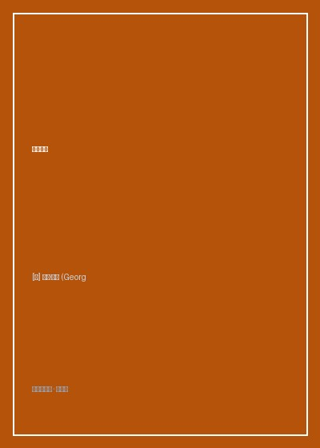

《下沉年代》

总体观点
《下沉年代》是理解当代美国政治极化、特朗普崛起与社会撕裂的最权威全景史诗。帕克指出，二战后维系美国繁荣稳定的罗斯福新政中产阶级契约在20世纪70年代末彻底破裂，取而代之的是新自由主义金融化与华盛顿游说资本的狂欢。
作者通过电影蒙太奇般的多线平行叙事，让四个底层与精英人物的真实人生互相印证：铁锈带扬斯敦老钢铁工人眼睁睁看着工厂拆毁、社区沦为毒品与废墟；而华尔街与硅谷菁英则沉溺于掠夺性金融衍生品与独角兽暴富神话。制度性的腐败与阶层流动停滞彻底摧毁了普通人对体制的信任。
全书以冷静克制、极具穿透力的新新闻主义笔调证明：一个国家的下沉往往不是源于外部强敌的入侵，而是源于统治精英阶层对其本国工人和中产阶级盟约的背叛。当所有维系共同体信任的传统支柱相继瓦解，整个社会便无可挽回地坠入相互猜忌与民粹狂潮的深渊。
核心观点
-
1. 战后新政契约的瓦解：从实业制造帝国到金融投机赌场
战后美国工人在通用汽车或伯利恒钢铁厂工作一生能买房买车供孩子上大学的美国梦契约，在新自由主义去监管浪潮下被彻底撕毁。
俄亥俄州扬斯敦钢铁厂在一声哨响中无预警全面停产倒闭，数万名技术工人一夜之间失去了养老金与医疗保险，沦为时代弃民。 -
2. 华盛顿政治圈的游说腐败：旋转门后的立法寻租流水线
国会议员与幕僚在离职后立刻进入K街游说公司年薪百万，为跨国金融巨头量身定制税收豁免法案，公共利益被彻底私人瓜分。
跟随理想主义青年幕僚康诺顿的视角，目睹华盛顿政治如何蜕化为纯粹依靠政治献金驱动、两党互相拆台表演的僵化机器。 -
3. 硅谷科技新贵的冷酷自恋：以改变世界为名的资本收割
彼得·蒂尔等硅谷巨头崇尚极端自由意志主义，坚信技术奇点与垄断利润，鄙视传统民主制度与平民苦难，沉溺于长生不老与火星殖民。
硅谷创造了成千上万个送外卖、租沙发的轻资产平台暴富神话，但旧金山街头却挤满了被飞涨房租逼入绝境的流浪汉帐篷。 -
4. 次贷危机的底层浩劫：掠夺性贷款对平民财富的血洗
华尔街将包装精美的有毒抵押贷款倾销给毫无金融辨识力的底层黑人与工人阶级，危机爆发后政府全力救助大银行，平民则被扫地出门。
坦帕湾的单亲妈妈在房地产泡沫破灭后房产变为负资产，法警连夜撬开门锁将她和孩子的家具堆在马路牙子上的凄惨场景。 -
5. 毒品与绝望的社会瘟疫：没有希望的土地上绽放的罪恶之花
当实体制造业彻底流失、小镇丧失了体面的就业岗位后，阿片类处方药、冰毒与枪支暴力迅速填补了空虚，带来全方位的社会性死亡。
曾经拥有整齐草坪与教会合唱团的中产社区，短短十年内所有商铺倒闭钉满木板，草坪上杂草丛生沦为毒贩交易的鬼城。
全书思维导图 · 知识脉络树
全书结构
-
第一部 序曲与裂变：1978-1984 告别罗斯福新政的黄金时代
从卡特总统著名的'危机演说'切入，展现滞胀危机与里根革命如何打破战后三十年的工农商业平衡，开启新自由主义去工业化大幕。
穿插时代人物剪影：电影明星变身总统的里根、华尔街并购之狼与老一代工会领袖在谈判桌前节节败退的悲剧特写。 -
第二部 虚幻的繁荣：1985-2000 金融衍生品与互联网泡沫狂欢
平行推进四位主角的人生：北卡农夫迪恩投身生物燃料、女工阿琳在破败车间辗转求生、康诺顿走进华盛顿权力迷宫。
展现克林顿执政时期废除《格拉斯-斯蒂格尔法案》拆除银行业防火墙，华尔街投行与游说资本在红地毯上结成神圣同盟。 -
第三部 泡沫与深渊：2001-2008 次贷危机爆发与美国梦的终极坍塌
聚焦佛罗里达州坦帕市的房地产狂热与大崩盘，真实记录工薪阶层如何在零首付次级房贷诱惑下被华尔街吸血掏空。
阿琳一家由于无法偿还浮动利率贷款被银行申请法院强制拍卖，孩子们在夜雨中搬着塑料储物箱寻找收容所的绝望时刻。 -
第四部 愤怒与占领：2009-2012 茶党运动、占领华尔街与民粹温床
深入奥巴马时代的政治僵局，记录草根保守派的茶党崛起与曼哈顿祖科蒂公园左翼青年的占领抗议，揭示民粹海啸的成型。
底层的无力感转化为深刻的阵营仇恨：两党支持者在社交网络上互相攻击，再也没有任何一个全国性共识可以凝聚民心。 -
结语：下沉时代的幸存者与未完的抗争
总结全书三十余年历史全景，向那些在崩塌废墟中依然倔强互助、试图重建社区希望的普通美国劳动者致敬。
北卡农夫迪恩在经历数次破产后，依然戴着破草帽在红土地里播种向日葵，写下'只要脚下还有泥土，我们就必须继续耕作'。